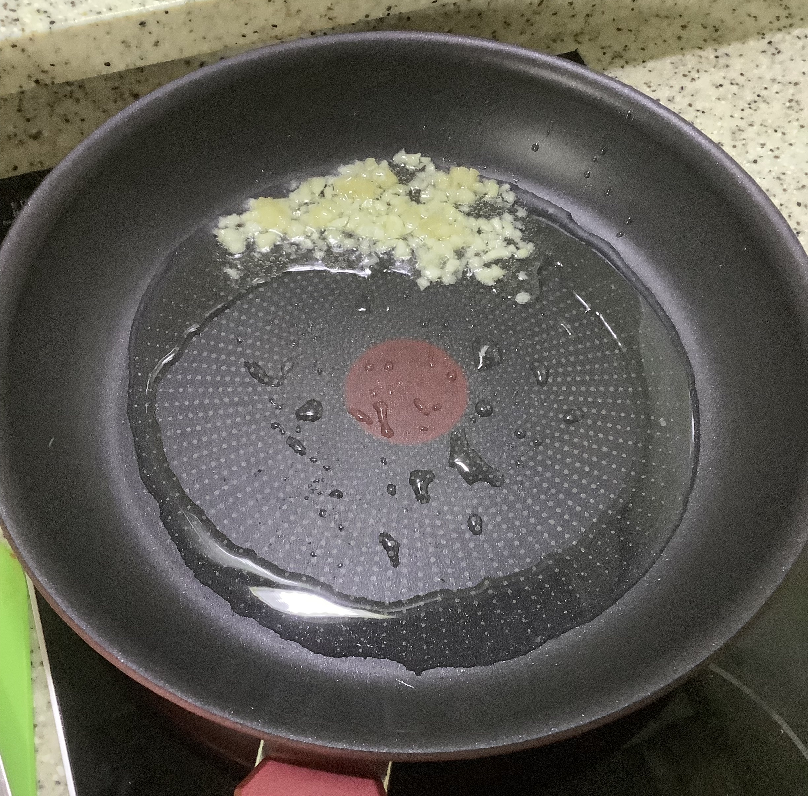
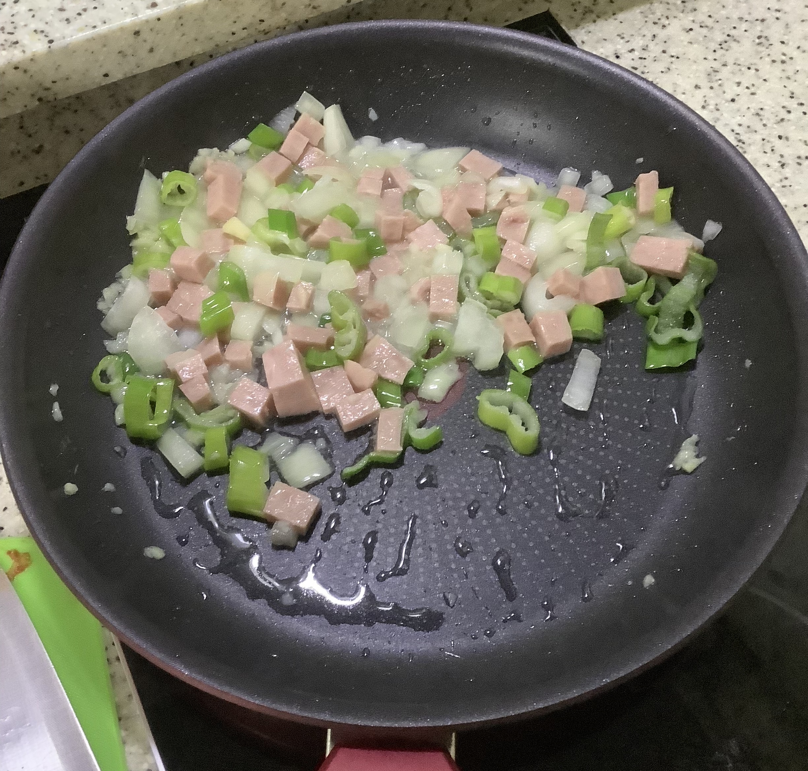
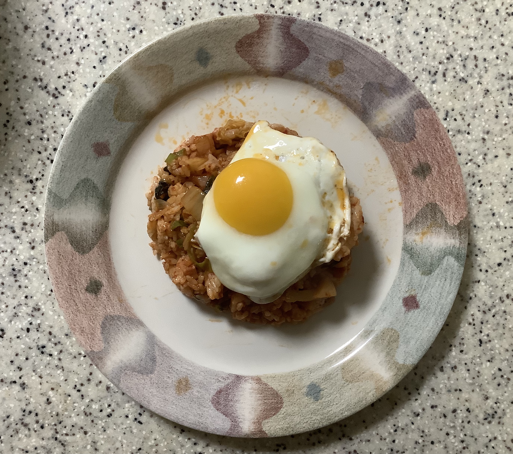

Cook - 알타리 김치를 활용한 김치볶음밥
1. 재료
(2인, 조리시 기준)양파 1/2, 대파 1/2, 다진마늘 한 숟갈, 스팸 두 슬라이스,
간장 1/2숟갈, 고추가루 1/2숟갈, 김치 하단 사진만큼(알타리 1개 정도), 밥 한 공기,
계란, 식용유

2. 조리
1) 달군 팬에 식용유를 두르고 다진 마늘을 넣어 향이 날 때까지 볶습니다.

2) 양파와 대파, 햄을 넣어 볶습니다.

3) 중간에 간장과 고추가루를 넣고 양파가 투명해지기 시작할 때까지 볶습니다.

4) 김치를 넣어 1분 정도 볶고 밥을 넣어 섞습니다.

5) 볶은 밥을 접시에 담고 계란후라이를 얹어 주면 완성입니다.

맛있는 식사 하세요!